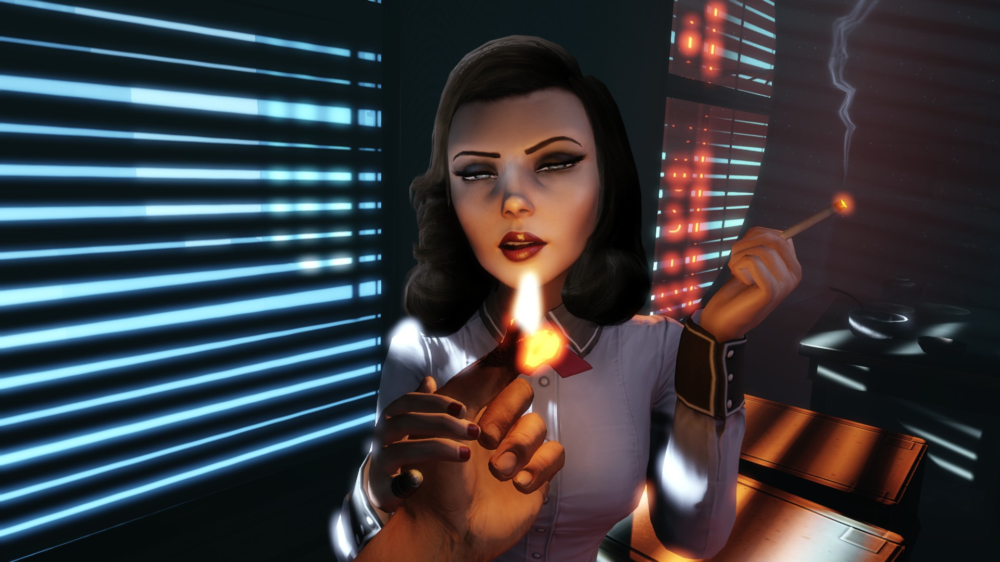
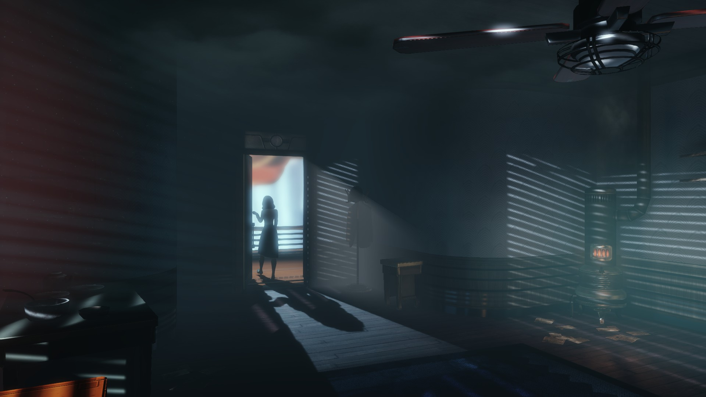

Bioshock Infinite: Burial at Sea – Episode 1
Un sfîrșit e un început
Dacă ați citit articolul meu despre Bioshock Infinite, atunci știți deja cît de mult am apreciat acest titlu – doar i-am acordat nota maximă, 10. Ce nu știți este altceva. Anume că jocul mi-a plăcut atît ce mult încît mi-am cumpărat imediat, la prima reducere, pachetul de pe Steam cu primele două Bioshock-uri. Deși cel dintîi nu m-a încîntat foarte tare, iar din al doilea m-a atras în special ultima sa treime, am simțit că Infinite este capodopera care, la modul retroactiv, legitimează, într-un fel, creațiile precedente ale aceluiași „autor”: Ken Levine. Da, știu, este o perspectivă oarecum ciudată, dar am vrut și să dau bani oamenilor care, în mijlocul acestei uluitoare invazii de titluri AAA proaste sub atît de multe aspecte, își respectă publicul plătitor și îi livrează un produs excepțional la toate capitolele, bine gîndit și bine finisat.
De altfel, fiind ca profesie critic de jocuri video, primesc, de cele mai multe ori, titlurile despre care scriu, direct de la distribuitori, fără a fi nevoit să plătesc pentru ele. Mi se întîmplă, însă, uneori, să îmi placă atît de mult un anumit joc, pe care eu îl am deja gratuit, încît simt nevoia de a da și eu bani producătorilor acestuia. Seria S.T.A.L.K.E.R., seria F.E.A.R., Cryostasis, Metro 2033, seria Ground Control, seria Penumbra și Amnesia, The Void, seria Total War pînă la Fall of the Samurai inclusiv, seria Race 07 și GTR 2, cele trei Gothic-uri, Morrowind, primul Far Cry, Portal-urile și Half Life-urile, seria Civilization, la care se adaugă Bioshock Infinite, toate acestea primite de mine moca, mi-au plăcut atît de mult încît am vrut să dau bani pe ele – și le-am făcut cadou prietenilor mei. În paranteză fie spus, dar din dar se face raiul – și ei mi-au întors gestul, pe măsură.
Nu iubesc DLC-urile. Mă enervează cînd producătorii vînd cu amănuntul elemente de joc ce ar fi trebuit să se afle în conținutul original. Foarte rar, însă, tot atunci cînd jocul îmi place foarte mult, cumpăr DLC-uri pentru că vreau să dau bani producătorului – vezi seria Total War și Civilization V. De data asta, DLC-ul în cauză nu este o bucată ruptă din Bioshock Infinite de către un Shylock al industriei de profil, ci un foarte cinstit episod separat, ce urmează acțiunii din titlul de bază. De altfel, fiind proiectat ca început al unei serii de astfel de producții „DLC-istice”, titlul său complet este Bioshock Infinite: Burial at Sea – Episode 1. Iar, dat fiind că acesta a ajuns în biblioteca mea de pe Steam fără nici o contribuție bănească din partea mea, întrebarea care se pune este: voi simți nevoia imperioasă de a face Burial at Sea cadou prietenilor mei?

Un început este un sfîrșit
Acum, vedeți voi, ceea ce am spus mai adineauri despre Burial at Sea, anume că „urmează acțiunii din” Bioshock Infinite, s-ar putea să nu fie întrutotul exact. Treaba stă cam așa: dat fiind că povestea din Infinite are drept consecințe directe anumite jonglerii cu paradoxurile spațio-temporale interdimensionale, nu prea se mai poate vorbi de o liniaritate previzibilă a intrigii, pentru că relația cauză-efect tocmai efectuează o vizită de lucru cu satelitul, pe orbita lui Marte, undeva, între Phobos și Deimos.
Cu ocazia parcurgerii acestui Burial at Sea mi-am dat seama că producătorii seriei Bioshock tocmai au tras lozul cel mare, pe baza storyline-ului din Infinite. Pur și simplu, acesta le permite aproape orice variantă de înlănțuire a evenimentelor și de combinare a conceptelor, spațiilor și personajelor din serie. Cele mai elementare permutări, dar și cele mai fanteziste, pot da naștere la o poveste captivantă, surprinzătoare, ce nu are nevoie de un suport logic simplu, ori prea evident, deoarece intriga poate fi complicată la Infinite, fără probleme, și tocmai în asta se găsește farmecul său. Este adevărat că procedeele combinatoricii fără sfîrșit sînt cele care țin în viață și telenovelele de cursă lungă… dar, să sperăm, nu este cazul aici.
În Burial at Sea, povestea se construiește tocmai pe o astfel de permutare în spațiu și timp, care aduce pe cei doi eroi din Infinite, Booker DeWitt și Elizabeth, în Rapture, orașul utopic subacvatic din primele două Bioshock-uri. Cumva, Booker este detectiv acolo, iar Elizabeth vine la biroul său de investigații particulare pentru a-i propune un fel de contract. Totul se desfășoară într-un context enigmatic, personajele sînt pătrunse de motivații ascunse, iar fapte apăsătoare din trecut par să își întindă umbrele între cei doi, încărcînd cuvintele cu sensuri greu de pătruns, dar ușor de sesizat.
Se pare că în Rapture au început să dispară copii. Unul dintre aceștia, evident, o fetiță, pe nume Sally, este cea în căutarea căreia se învoiesc să pornească eroii, aceiași din Infinite: DeWitt și Elizabeth. Drumul lor subacvatic va presupune inițial contactul cu un artist decadent-psihotic, după care va trece în principal prin imensele și luxoasele spații comerciale ale orașului de sub mare, unele dintre ele aflate în ruină și folosite ca închisoare pentru susținătorii dușmanilor lui Andrew Ryan, creatorul și stăpînitorul Rapture-ului.
Din fericire, ceea ce sună un pic cam prea simplu spus aici, așa, în rezumat și fără de spoilere, este nu doar mai nuanțat în joc, dar și mai interesant prin felul în care Ken Levine și oamenii lui reușesc să facă exact lucrul de care vă spuneam cu cîteva paragrafe mai devreme – anume să profite cu succes de posibilitățile deschise de Infinite și să obțină efectul maxim din acestea. Bineînțeles, pentru ca opera să fie completă este nevoie ca aceasta să fie încoronată de un sfîrșit pe măsură. În opinia mea, tocmai finalul acestui prim episod al DLC-ului Burial at Sea este cel care nu doar că îi asigură legitimitatea, dar îi și dezlănțuie potențialul epic, într-un univers eliberat de limitele convențiilor dimensionale.
{kind=link}
{kind=link}
Oamenii, înainte de oameni
Unul din motivele pentru care îmi place întreaga serie Bioshock este felul în care producătorii săi au reușit să creeze o anumită atmosferă. Este adevărat, e vorba de o trăire apăsătoare, de percepția acută a tendinței omului de a-și „valorifica” pînă în pînzele negre potențialul negativ, de a fi distructiv față de sine și de semenii săi mai ales atunci cînd scopul este atît de frumos, încît orice mijloace sînt scuzate: genocidul, crima, atrocitățile de tot felul devin trepte firești către o lume mai bună, mai dreaptă.
Interesantă, însă, în întreaga serie Bioshock, este portretizarea oamenilor de rînd angrenați ca rotițe mai mult sau mai puțin voluntare în mecanismul societăților utopice de sub mare și din cer – Rapture și Columbia. Aceiași oameni pe care îi regăsim în Burial at Sea, cărora le ascultăm conversațiile pline de insinuări, de temeri, de mai mici sau mai mari răutăți și viclenii. Oameni pe care, apoi, sîntem nevoiți să-i confruntăm sîngeros (sic!), atunci cînd răul din ei ajunge să le posede trupurile și sistemele nervoase complet devastate de excesul în folosirea plasmidelor - agenți de transformare genetică ce promit atîtea și variate puteri „supranaturale”, dar cu ce preț…
Aceștia, victimele abuzului de plasmide, sînt oponenții tăi în majoritatea luptelor de care ai parte în Burial at Sea - Ep.1. Dar, vorbind despre atmosfera grea, apăsătoare, a jocului(/DLC-ului, mă rog…), tocmai pe acești oameni simt nevoia să-i pomenesc, ca pe niște decoruri, ca pe niște elemente de fundal, ca pe produsul unei dezumanizate scenografii. Felul în care se mișcă atunci cînd nu te observă, felul în care interacționează unii cu alții, detaliile de îmbrăcăminte, accesoriile vestimentare stranii, măștile, toate acestea sînt componente extrem de expresive, care impresionează profund pe jucător, ale trăirii generale declanșate de întreaga serie. Însă, în Burial at Sea, aceste componente sînt mai accentuată chiar decît în restul francizei Bioshock, deoarece Ep. 1 pare a se concentra mai mult pe ei, pe oamenii din Rapture, decît pe leaderii acestui oraș, ai acestei utopii. Cei care erau antagoniștii majori în primele Bioshock-uri, precum Andrew Ryan sau Frank Fontaine, sînt acum în plan secund, chiar terț, prezențele lor sînt estompate – locul lor este acum luat de oamenii simpli.
Repet, aceștia sînt foarte bine realizați în Burial at Sea – Ep.1, sub multiple aspecte. Iar unul dintre ele este cel al monologurilor: cei afectați de excesul de plasmide au un discurs aproape continuu, pe care îl poți auzi cînd te apropii de ei fără a fi detectat. Este vorba de un discurs obsesiv, adresat propriei persoane sau unui partener imaginar, în care sensul lipsește aproape cu desăvîrșire. Există doar frînturi de idei, de imagini, de dureri, de bucurii și pasiuni, de amintiri și automatisme comportamentale, toate însăilate de-a valma de către mințile descompuse ale acestor locuitori ai Rapture-lui care au trecut de mult de limitele utopiei, în distopia cea mai crîncenă, cea personală, care își are locul de desfășurare în propriul psihic, continuu torturat de o suferință ce și-a pierdut orice alte resorturi în afară de acela de a se perpetua, mereu și mereu, cîtă vreme mai există o minte din care să se hrănească. Deși prezente încă de la cel dintîi Bioshock, aceste monologuri absurde își găsesc în Burial at Sea forma cea mai expresivă, cea mai impresionantă.
Da, tabloul vizual și auditiv al acestor sărmani este unul din componentele de forță ale primului episod din Burial at Sea. Cumva, nu doar absența marilor antagoniști, dar mai ales a micilor surori, face ca rezervele de simțire, de compasiune, ale jucătorului, să își schimbe obiectivul obișnuit, exercitîndu-și acum funcția omenească la vederea ruinelor umane ale societății din Rapture – creatorii acestui DLC au reușit să le facă să semene atît de mult cu noi…
{kind=link}
{kind=link}
Fețe-fețe
Sub aspect vizual, însă, oponenții afectați de excesul de plasmide beneficiază de un avantaj neașteptat în raport cu celelalte personaje, cele cu care nu te lupți, adică cetățenii obișnuiți ai Rapture-lui. Aceștia din urmă au o animație facială foarte proastă, concretizată prin imobilitate a feței și lipsă dramatică de expresivitate. Sincer, cu excepția mai mult decît notabilă a Elisabetei, în toată seria Bioshock m-a deranjat inabilitatea producătorilor de a crea personaje expresive vizual, în afara celor aflate în categoria victimelor abuzului de plasmide – acestea au fețele atît de contorsionate, sau acoperite cu măști, încît nu au nevoie de nici o animație facială suplimentară, pentru că oferă un tablou extrem de grăitor prin ele însele.
Din nefericire, nici în Burial at Sea – Ep.1 lucrurile nu stau mai bine sub acest aspect. Mai mult decît atît, am fost încă o dată deranjat de numărul scăzut al modelelor diferite de personaje utilizate într-un nivel, sînt prea multe asemănătoare, cu foarte puține variațiuni altele decît culoarea părului și a îmbrăcăminții. Este ușor enervant, dar și greu de explicat: într-o producție de buget deloc modest, precum cele din seria Bioshock – și mai ales după succesul uriaș la critică și public al Infinite – cum este posibil să fușerești, să faci economie tocmai pe spatele unei componente a jocului atît de… „in their face”?
În rest, însă, grafica este pur și simplu superbă în Burial at Sea – Ep.1. Revenirea în Rapture înseamnă întoarcerea la acel bestial art deco „with a twist”, de data asta parcă și mai interesant, mai rafinat, dar și mai bun, atît sub aspectul detaliului, al rezoluției texturilor și liniilor trasate de graficieni, cît și al conceptului general vizual al acestui DLC, pe care îl simt ca o evoluție în serie. Pînă și puținele plante decorative din Burial at Sea – Ep.1 arată semnificativ mai bine decît în Infinite…
Am apreciat în mod special mica secțiune dedicată întîlnirii dintre eroii noștri și un artist din Rapture, atins de aripa geniului, dar și a nebuniei – cum altfel, cu atît mai mult în utopicul oraș subacvatic? Acolo am avut parte de surprize interesante, atît sub aspect grafic, cît și ca atmosferă și intrigă. Păcat că prezentul episod nu este tocmai întins ca spațiu și timp, deoarece ar fi fost benefică pentru experiența jucătorului o elaborare, o amplificare, o exploatare și explorare a teritoriului infam și tulburător al creativității artistului de care vorbeam. Cine știe, nu mi se pare deloc imposibil ca prezența acestuia să fie recurentă în episoadele următoare ale seriei de DLC-uri Burial at Sea.
{kind=link}
{kind=link}
1999
Am abordat Burial at Sea – Ep.1 pe nivelul de dificultate „1999”, care nu era disponibil în momentul în care am parcurs Bioshock Infinite. „1999” este echivalentul unui mod de joc hardcore, cam așa cum erau, încă, disponibile, la finele decadei nouăzeciste. Practic, ți se pun la dispoziție mult mai puține resurse – din cele dătătoare de bani, sănătate, „mana” și muniție – dar și oponenții sînt mai ageri, mai puternici, mai capabili în a te detecta și ucide.
Ei bine, pentru mine acest nivel de dificultate a fost o adevărată gură de aer proaspăt, adus, parcă, de o pală de vînt ce bate din trecut. Da, titlurile AAA erau mai bune mai demult, cînd mașina de maketing/management/PR încă nu le transformase într-un avorton născut dintr-un threesome frenetic între Hollywood, o casă de brokeraj și o bancă. Din fericire, nu știu prin ce minune, așa cum producătorii lui Bioshock Infinite au reușit să ne dea un joc superlativ prin poveste, muzică, atmosferă și personaje, se pare că au recidivat și cu nivelul de dificultate crescut pus la dispoziția noastră în forma acestui „1999”.
De care, eu unul, m-am bucurat nespus. Incredibil, a trebuit să fiu atent cum îmi plănuiesc upgrade-urile la arme și plasmide(/vigors), cum intru în luptă, a fost necesar să-mi stabilesc tactici, să-mi gîndesc atacurile și să mă adaptez rapid schimbărilor de situație. Uau! De ani buni nu am mai avut nevoie de așa ceva într-un shooter, cu excepția notabilă a primului și celui de-al treilea F.E.A.R. (acesta din urmă, jucat cu Paxton Fettel pe nivelul maxim de dificultate, este un veritabil deliciu). De obicei, FPS-urile de dată mai recentă sînt culoare de invincibilitate cinematică, caracterizate de o dificultate penibil de scăzută și de scriptare excesivă – mă refer aici la campaniile singleplayer, în special. În multiplayer este perfect posibil să ai parte de o experiență cît de cît interesantă și provocatoare.
Singurele reproșuri majore pe care le-aș fi adus seriei Bioshock pînă acum, sub aspectul dificultății luptelor, ar fi fost excesul de resurse și previzibilitatea luptelor (provenită în mare măsură din repetitivitatea acestora). De data aceasta, pe nivelul de dificultate „1999”, resursele sînt suficient de puține pentru a transforma jocul aproape într-un survival sadea. Sau sadic. O mică portiță de scăpare, totuși, ne-a fost lăsată în Burial at Sea – Ep.1: nu mai ești limitat la un maxim de 2 arme pe care le poți avea asupra ta, acum poți deține simultan toate tipurile de arme pe care le-ai găsit în joc. Avantajul este acela că poți schimba repede pe o altă armă, atunci cînd ți se termină muniția din cea curentă. Practic, acum ai acces la întreaga cantitate de muniție pe care o porți asupra ta – iar fără această facilitate jocul ar fi devenit foarte greu, chiar și dacă te-ai fi bazat pe plasmide/vigors, pentru că „mana” s-ar fi epuizat foarte repede.
{kind=link}
{kind=link}
Am apreciat designul de nivel, din perspectiva luptelor. Multe din spații sînt mai largi, oferind variante diverse pentru rezolvarea confruntărilor, cu numeroase elemente de decor ce pot fi folosite drept capcane, precum butoaiele explozive, scurgerile inflamabile, bălțile de apă. Există și puncte în care poți face uz de cîrligul apărut în Bioshock Infinite pentru deplasarea pe liniile de „tramvai” aerian. Iar santinelele automate sînt de găsit în multe locuri, ceea ce, adăugat la numărul mare de oponenți de care ai parte pe „1999”, face foarte rentabilă și spectaculoasă folosirea vigorului de posedare a inamicului.
În general, am fost plăcut surprins de calitatea designului de nivel. O singură nemulțumire am: consider că nu au fost folosite suficient de creativ, că nu au fost exploatate la adevăratul lor potențial puterile speciale ale Elisabetei, în special acelea de augmentare/modificare a „cîmpului de bătălie”. Sub acest aspect, Burial at Sea – Ep.1 a fost o dezamăgire pentru mine.
O mențiune aparte am de făcut în ce privește oponenții. Am fost uimit să văd că există rudimentele unei tactici colective, AI-ul pare mai bun ca grup, știe să se folosească de avantajele „terenului” și să te învăluie pe flancuri, să te ocolească și să-ți cadă în spate. În plus, oponenții bazați pe lupta corp la corp se mișcă foarte rapid, dar și neașteptat, cu schimbări de ritm și direcție a deplasării care te surprind, solicitîndu-ți serios coordonarea și precizia în executarea focului, cu atît mai mult cu cît ești aproape obligat să tragi ochind prin cătarea armei, pentru a beneficia de bonusul de damage care este aplicat inamicilor pe care îi lovești.
Iar la finalul acestui Burial at Sea – Ep.1 am avut parte de o surpriză pe care, din perspectiva atracției mele pentru shooterele anilor ‘90, eu o consider plăcută. În acele FPS-uri vechi se putea întîmpla să găsești locuri, amplasamente, în anumite niveluri – și în special în cele cu boși – care să-ți ofere un avantaj oarecum necinstit. Hmm, exact în confruntarea cu bosul final din Burial at Sea – Ep.1 am descoperit un astfel de loc, din care puteam trage fără să fiu atins de inamic. E drept, muniția mi s-a terminat repede, așa că a trebuit să am răbdare și să tot aștept ca Elizabeth să-mi mai arunce cîte o sticluță de „mana” sau cîte un încărcător de armă, dar, folosindu-mă de acest exploit nesimțit, am reușit să înving un bos destul de aspru. Da, poate că nu e frumos ceea ce am făcut, dar, pe de altă parte, am retrăit cu intensitate o anumită bucurie a descoperirii și utilizării unui astfel de exploit, cum nu am mai simțit de la 1999, toamna, încoace.
{kind=link}
{kind=link}
Angel radio…activ
Nu puteam încheia articolul de față fără a vorbi despre unul din personajele cele mai importante din istoria contemporană a jocurilor: Elizabeth. Și primul lucru care îmi vine în minte este o afirmație destul de recentă a lui Ken Levine, care afirma că o privește pe Elizabeth ca pe un copil al său, și că, din această perspectivă, este afectat de diversele producții vizuale ce pot fi găsite online și în care Elizabeth este fetișizată, ba chiar „pornografiată”, uneori la un mod de-a dreptul urît. Da, este vorba de o formă de exploatare sexuală a unei ființe virtuale, și e de înțeles nemulțumirea creatorului său. Pe de altă parte, însă, mi se pare că anumite considerații făcute în clipurile cu titlul „You are wrong about Sucker Punch”, postate de MovieBob pe canalul The Escapist de pe YouTube, se aplică și în cazul de față – nu le voi relua, vă recomand vizionarea lor.
Să nu pierdem, însă, din vedere, faptul că tocmai în Burial at Sea – Ep.1 avem, pînă la urmă, de a face cu o Elizabeth fetișizată, personajul este încărcat de erotism discret, dar plin de tensiune, dacă nu chiar de forță. Acest fapt nici nu este de mirare, deoarece Elizabeth este în Burial at Sea – Ep.1 bucățică ruptă din filmele polițiste noir ale anilor ‘40 – ‘50 (îmi vine în minte acum Lauren Bacall în titlurile în care a jucat alături de Humphrey Bogart).
Da, avem de a face, clar, cu o nouă Elizabeth, matură, degajînd sexualitate, siguranță și putere. Dar această Elizabeth nu o contrazice cu nimic pe cea din Bioshock Infinite, acea ființă angelică, la care, o spun sincer, nu mă pot gîndi fără să simt un fior prin inimă. Însă, pentru a înțelege felul în care cele două Elizabeth sînt una și aceeași persoană, trebuie să atingem tocmai felul în care este înțeles cuvîntul „înger”.
Sîntem obișnuiți ca îngerul să fie asociat cu frumusețea, bunătatea, iubirea necondiționată, sacrificiul de sine, blîndețea. Cînd spui „angelic”, la asta te gîndești, întotdeauna. De fapt, îngerul este o entitate care oferă două aspecte celui care o privește, în funcție de context. Unul este cel de care vorbeam, cel angelic clasic, iar celălalt este fața cumplită, vindicativă, distrugătoare, pusă în slujba executării unor sentințe imuabile, venite de dincolo de înțelegerea omului comun. Tocmai aceste două fețe ale aceleiași entități angelice sînt cele manifestate de Elizabeth, cea blîndă în Infinite și cea terifiantă în Burial at Sea – Ep.1.
Și, încă o dată, simt nevoia să fac o trimitere la gnostici (da, recunosc, în ultimul timp am ajuns un pic obsedat de paralelele tulburătoare ce se pot trasa între gnosticism și mythosul jocurilor – nu ne mai ajunge doar un simpăticuț Cărtărescu „pururi tînăr, înfășurat în pixeli”, tare bine ar fi picat și un Culianu care să călătorească prin lumile de dincolo de monitor). Elizabeth îmi aduce tot mai mult cu Sophia (cea din scrierea gnostică Pistis Sophia), iar Burial at Sea – Ep.1 nu face decît să sublinieze această asemănare a Elisabetei cu Sophia, întru aparentă contradicție a fețelor și manifestărilor, poate chiar pomenind-o pe cea a dualității fecioară - prostituată. Multe ar fi de discutat aici, spațiul nu o permite, importantă rămîne ideea complexității și consistenței extraordinarului personaj feminim central al noilor titluri Bioshock, care face tare bine și primului episod din DLC-ul Burial at Sea.
Episod pe care îl recomand din toată inima. Evident, părerea mea este că trebuie să îl parcurgeți pe modul de dificultate „1999”, pentru a vă bucura plenar de ceea ce are acest DLC de oferit. Așa veți avea nevoie și de mai multă vreme pentru a-l încheia, deoarece, altfel, Burial at Sea nu este deloc lung – mie mi-au fost suficiente 5 ore de joc efectiv. Dar, pînă la urmă, lucrul cel mai important adus de acest DLC, dătător de speranțe în industria jocurilor AAA, este tocmai faptul că producătorii Bioshock ne-au arătat încă o dată că ne respectă pe noi, jucătorii, și că vor să facă efortul necesar pentru a ne oferi titluri nu doar superlative, ci de-a dreptul memorabile. ■

Galerie imagini